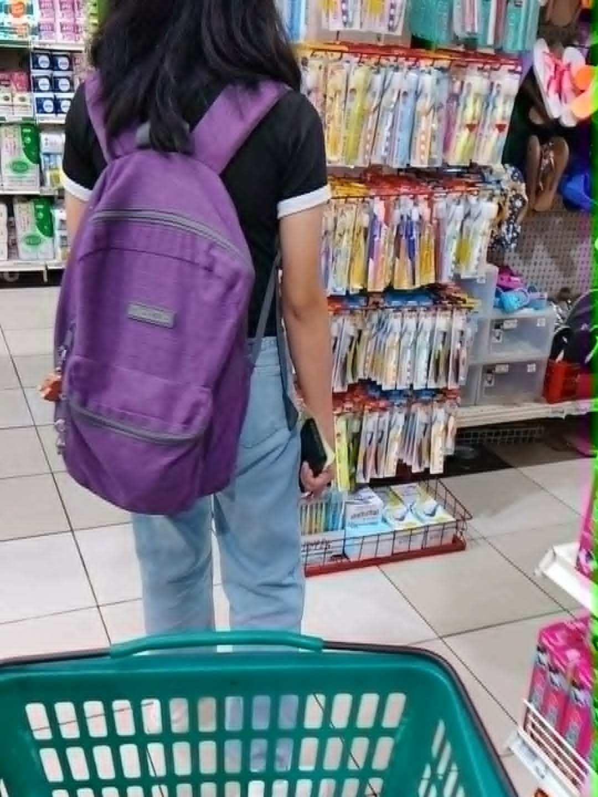
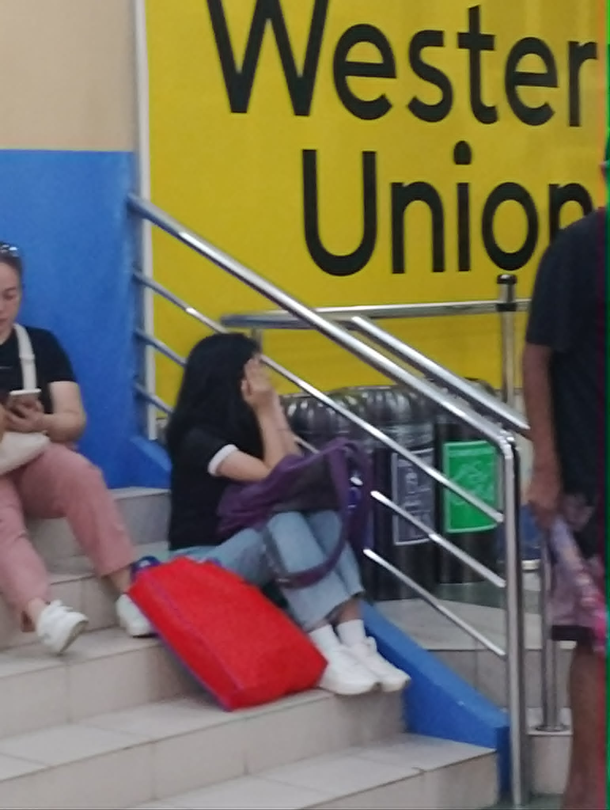

I took this picture because, in this moment, I could already see our future together. I imagined us spending every Sunday side by side going to church, enjoying a meal together, and doing our grocery shopping, just living a simple but beautiful life as husband and wife. That’s why I captured this moment. It reminded me of the life I dream of building with you someday, when we're married, happy, and both successful, supporting each other through everything. You're the only person I want to share my future with. You're the only one I want to marry, the only one I want to grow old with, and the only one I can picture standing beside me through every season of life. No matter what the future brings, my greatest dream is to build a home filled with love, laughter, faith, and countless memories with you. Every time I imagine my future, you're always there, holding my hand. I love you, and I hope one day we'll look back at this moment and smile because our dream finally came true.
This is just a random video of us looking around at things we might use someday, but to me, it means so much more than that. While we were walking together, I couldn't help but imagine our future especially our Sundays. I pictured us shopping for things we'll need for our home, choosing everything together. I can already imagine us saying, "We need this for the house," and whenever there's a good sale, you already know we won't let that opportunity pass. Those little moments may seem ordinary, but with you, they'll become some of my favorite memories. And one thing I couldn't stop noticing in this video was your smile. Your smile is so beautiful, my love. It has this way of making everything around me feel lighter and brighter. Seeing you happy is one of the things I cherish the most. I hope that one day, these little dreams won't just stay in our imagination they'll become our reality. I can't wait to build a home with you, create beautiful memories together, and spend a lifetime making even the simplest moments feel special.

I was trying to take a candid picture of you because I couldn't stop admiring how beautiful you are. I had just bought us something to drink, and when I looked over at you, I was completely captivated. You looked so beautiful and so adorable that I couldn't resist taking a picture of you. Every time I look at you, I find another reason to fall in love with you all over again. You have this effortless beauty that takes my breath away, and the cutest smile that can brighten even my darkest days. I don't think you'll ever truly realize how stunning you are through my eyes. I love capturing moments like this because I want to remember them forever. Years from now, I want to look back at these photos and remember how lucky I was to have the most beautiful girl by my side.